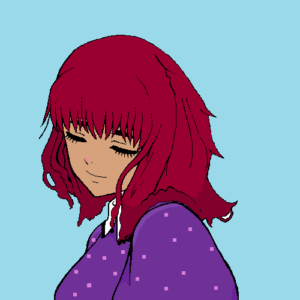

¡Hola! Soy Noe Costas, pintora licenciada en Bellas Artes. Si te gusta mi trabajo y quieres saber más sobre mí, ¡estás en el sitio adecuado!

Desde que era pequeña, siempre me gustó observar y documentar de una forma artística lo que había a mi alrededor.
Eso me impulsó a seguir mis sueños de estudiar una carrera de arte para poder seguir aprendiendo y creando, con la posibilidad de expandir mis horizontes más allá de lo observable.
Durante todos estos años, mi fuente de inspiración ha ido variando, creando diferentes tipos de cuadros y dando lugar a lo que podría decirse que fueron diferentes etapas.
Sin embargo, ahora mismo estoy explorando un único estilo, que es el pixel art.
Además de mi pasión por el arte, tengo otras aficiones y gustos, como la cocina y los animales.
Me encantan los días otoñales en los que poder dsifrutar de una calentita sopa mientras leo un libro con mi gata Cora durmiendo en mi regazo.
En mi tiempo libre me gusta ser voluntaria en el refugio de perros y gatos Patitas. De hecho, por cada venta de cualquiera de los productos de mi tienda, un porcentaje se destinará a comprar comida y medicinas para los animales de Patitas.
Si queréis colaborar, a continuación os dejo la siguiente tabla para que veáis cómo gestionamos los donativos:
Producto
Precio
Donativo
LLavero
5€
3€
Camiseta
10€
6€
Print
15€
10€
Mochila
25€
18€
Productos de mayor precio
---
70%
El refugio se encuentra justo al lado del Hotel Bienestar. Como son nuevos, todavía no tienen información disponible en internet, pero para encontrarlos podéis buscar la dirección del hotel.
En esta página iré comentando y dando mi opinión sobre libros que leo, videojuegos y series que me he visto y otros hobbies. Como acabo de empezar, todavía no tengo una gran selección, pero dadme tiempo y os ofreceré una buena lista de recomendaciones.
{kind=link}